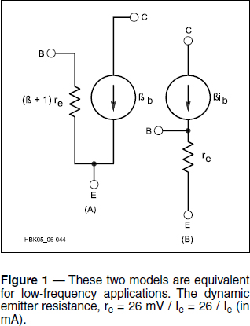
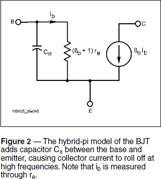
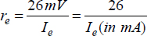
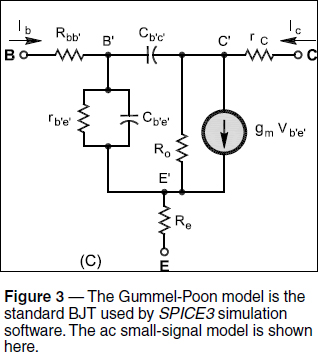
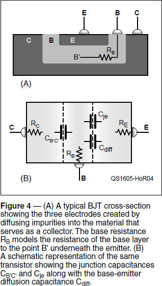

Experiment #160 — Transistors at High Frequencies
The first few columns of “Hands-On Radio” covered bipolar junction transistor (BJT) amplifier circuits like the Common Emitter (#1), Emitter Follower (#2), and Common Base (#28).1 For the basic gain and bias equations, transistor behavior was simplified to assume a base-emitter voltage (VBE) of 0.7 V and current gain (β) was assumed to be constant. If you want a more accurate picture of the transistor, particularly at RF, you have to take into account more subtle aspects of how the transistor actually behaves. A good explanation comes from reviewing the models used by simulators — let’s zoom in for another look.
Transistor Models
If you look through texts on transistors, you’ll find a number of models that describe BJT behavior — there are a half-dozen in The ARRL Handbook’s chapters on Analog Basics and RF Techniques alone.2 Why are there so many, and how do you choose the right one? It depends on how the transistor is to be used. Some models are designed for use at dc and some at very high frequencies.
What’s the difference between large- and small-signal models? Large-signal models include behavior of the transistor in the non-linear regions, such as cutoff and saturation, and the effects of dc bias. Small-signal models assume the transistor is biased to operate in its linear region. The linear small-signal model is a lot easier to deal with than the large-signal models for RF applications.
The first model you’ll encounter is the very simple “beta generator with emitter resistance” model of Figure 1. The current source in this model replicates the current gain of the transistor, β, since collector current, IC = βIB. This model works for ordinary dc circuits like relay drivers or on/off switches. It is too simple to be of much use at RF but it does help understand the basic function of the transistor. In general, if a model does not include capacitance, it is intended to be used at dc and low frequencies.


The Hybrid-Pi Model
Commonly used at higher frequencies is the hybrid-pi model that adds a single capacitor, Cπ, between the base and emitter. BJT construction creates capacitance as discussed below. That capacitance causes high-frequency gain rolloff. Note that the model’s base current, ib, is defined as that going through re so that current through Cπ does not contribute to the collector current, β0ib. (β0 is the transistor’s low-frequency current gain.) As frequency increases, the reactance of Cπ decreases. This reduces the amount of base current entering the transistor that is multiplied by β0, causing gain to fall.
The value of re is sometimes replaced by hie, which is one of the h or hybrid parameters and represents ac input impedance. AC current gain is represented by hfe and often replaces β.3
Dynamic Emitter Resistance
In both of the simple models we’ve looked at so far, you’ll see an internal dynamic emitter resistance, re, that is dependent on emitter current:

This is a characteristic of the transistor itself and should not be confused with an external resistor connected to the emitter which is designated RE. Dynamic emitter resistance represents the change in base-emitter voltage with the change in emitter current. The change in voltage occurs because of the changing characteristics of the base-emitter junction as emitter current increases.
The numerator value of 26 mV is the room-temperature value of kT/q, where k is Boltzmann’s constant, T is temperature in Kelvin, and q is the charge of the electron. At very high or low values of temperature or emitter current, the value of 26 mV will no longer be valid, but for most “normal” situations, it’s close enough.
The Gummel-Poon Model
In Figure 3, you see the small-signal ac version of the model originally described by Gummel and Poon of Bell Labs in 1970. The Gummel-Poon model improves on the accuracy of the earlier Ebers-Moll model. This is the standard model used by circuit simulators based on SPICE3, such as LTSpice that we’ve used in this column previously. With values for all parameters specified by the manufacturer this model can provide accurate results to very high frequencies. The large-signal version of the model also accounts for the variation in current gain with dc current levels.

Figure 4 shows the source of the junction capacitances in the Gummel-Poon model. Figure 4A shows how a planar transistor is actually constructed and Figure 4B gives a more schematic view. Capacitance CB’C’, between the base and collector, is created by the reverse-biased base-collector junction. The junction capacitance of the base-emitter junction is labeled Cje. The depletion regions at each junction act as the space between two plates of a capacitor formed by the regions of charge on either side of the junction. This is very similar to a reverse-biased varactor diode with the capacitance controlled by bias voltage that moves the regions of charge closer together or farther apart.

Figure 4B also includes the diffusion capacitance, Cdiff, which accounts for charge moving through the base-emitter junction when the transistor is biased on. To amplify a signal, that charge must be moved in and out of the junction region, creating the effect of a charge-storing capacitor. Cje and Cdiff act together in parallel and are represented by CB’E’, shown in the model and in the hybrid-pi model as Cπ. (This description oversimplifies the actual behavior of the Gummel-Poon model and is not meant to be an exact treatment.) Both CB’E’ and CB’C’ are on the order of a few pF for most common transistors.
Finally, instead of the collector current being modeled with a current gain, the base-emitter junction voltage, VB’E’, is multiplied by the transconductance, gm which has units of amps/volt. This model is more representative of what’s actually happening in the transistor and results in more accurate behavior compared to real devices. Next month, we’ll experiment with a couple of circuits that demonstrate these effects with real transistors.
Finding Model Values
When models weren’t used as widely, the manufacturer data sheets were pretty much the only source for these component values. They aren’t measurable from outside the transistor, except indirectly. The place to look is on the data sheet, in the “Small-Signal Characteristics” section, where you can find input and output capacitance. Today’s manufacturers usually provide SPICE models on their websites so you can get verified models in minutes!
Notes
1All previous Hands-On Radio experiments are available to ARRL members at www.arrl.org/hands-on-radio.
2The ARRL Handbook is available from the ARRL Store at www.arrl.org/shop/ARRL-Handbook-2016-Softcover-Edition.
3Hybrid and other two-port parameters are explained in detail by the Talking Electronics tutorial, available at www.talkingelectronics.com/Download%20eBooks/Principles%20of%20electronics/CH-24.pdf.